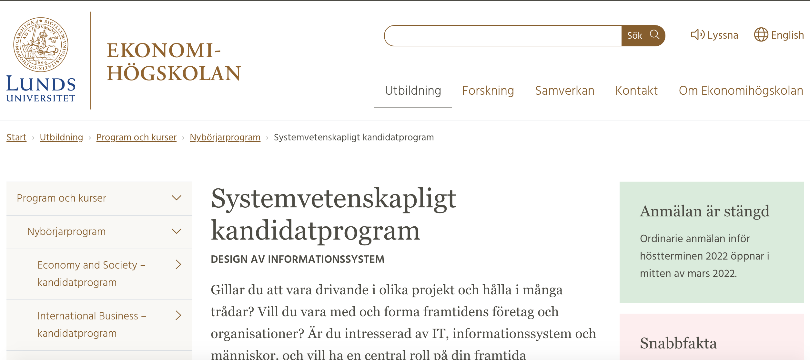

Anna gillade teknikvärlden, den var fräsch, modern och cool. Så hon hade systemvetenskapsprogrammet i Lund i bakhuvudet. Men kodning och fastna bakom en dator? Hmmm, tveksamt...
En av hennes vänner utbrast "Anna, du skulle passa perfekt som en medicinsk sekreterare! För att jobba som det måste man kunna skriva snabbt."
Anna blev exalterad och sökte upp vad det innebad att jobba som medicinsk sekreterare. Arbetsförmedlingen hade en video på det och det var genom deras videobibliotek på olika yrken som Anna hittade detta:
Wow! Ett tekniskt jobb som inte är så tekniskt, där man inte fastnar bakom datorn och dessutom är jättesocial! Detta ser ju jättekul ut. Anna hade hittat något riktigt intressant and the rest is history...